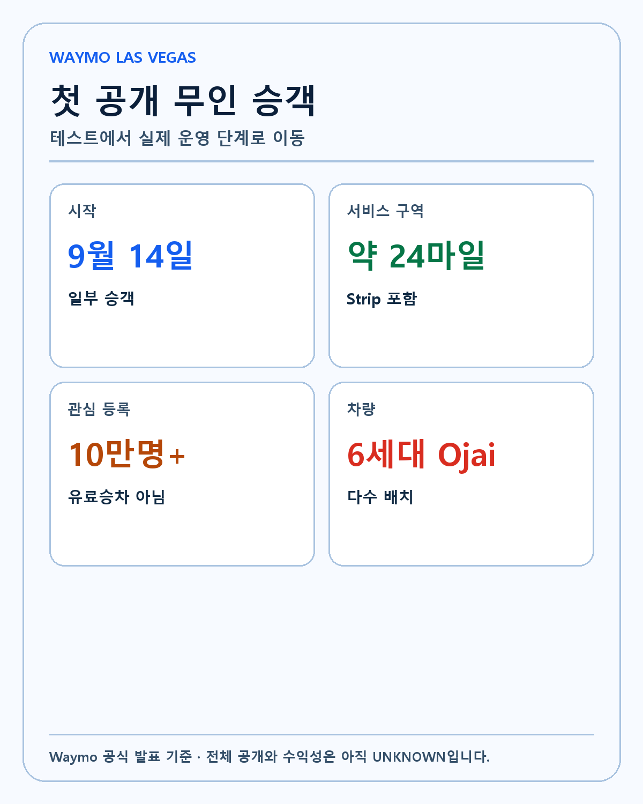
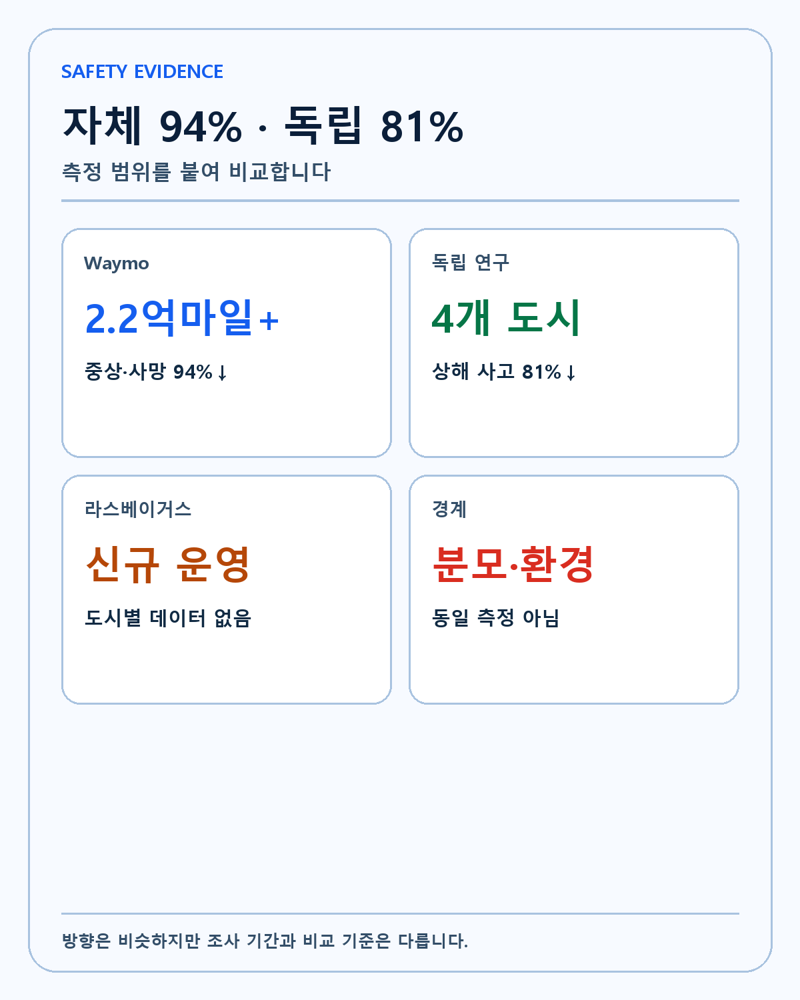
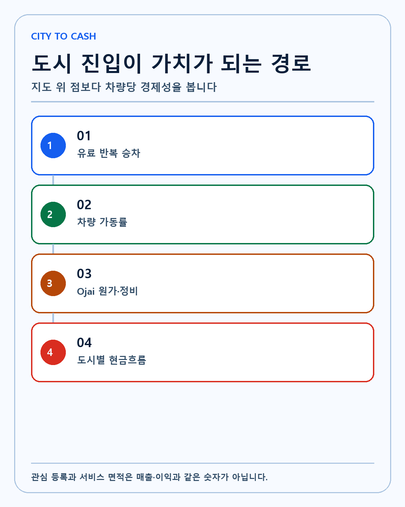
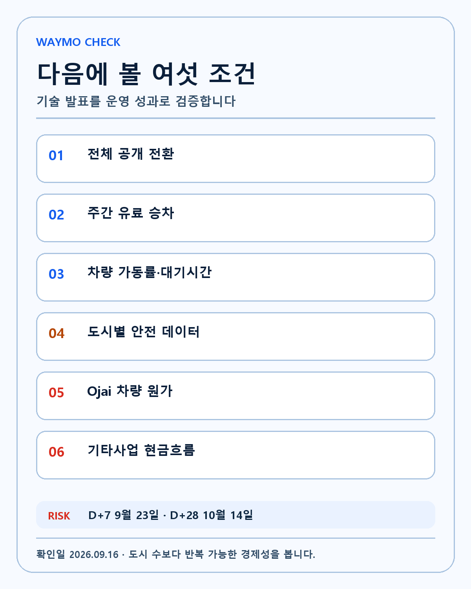

WAYMO LAS VEGAS · DEEP RESEARCH
Waymo 라스베이거스 심층 분석: 24마일 서비스 구역과 6세대 Ojai가 Alphabet 가치에 주는 의미
첫 무인 승객 운행을 도시 수가 아니라 안전성·차량 가동률·Ojai 원가·유료 반복 승차와 Alphabet 현금흐름으로 검증합니다.
Waymo의 라스베이거스 첫 무인 승객 운행은 도시 확장, 안전성과 수익화 가운데 무엇을 실제로 증명했는가? 같은 주제의 네이버 글을 늘여 쓴 문서가 아니라 작동 원리, 반대 논리, 무효화 조건과 후속 검증을 독립적으로 구성한 리서치입니다. 작성·검증 기준일은 2026-09-16입니다.
Waymo가 라스베이거스에서 실제로 시작한 것

FACT. Waymo의 라스베이거스 공식 발표는 9월 14일부터 주민과 방문객 일부에게 운전자가 없는 완전자율주행 승차를 제공한다고 밝혔습니다. 서비스 구역은 약 24마일이며 10만명 이상이 관심을 등록했습니다.
왜 중요한가. 테스트 차량이 도로를 달리는 단계에서 실제 승객을 태우는 운영 단계로 넘어갔다는 점이 핵심입니다. 관광 수요가 크고 낯선 도로 이용자가 많은 도시에서 앱 호출, 탑승, 원격지원과 차량 회수를 함께 검증하게 됩니다. 이 연결이 실제 경제적 가치가 되려면 발표 다음 단계에서 반복되는 데이터가 필요합니다.
반대 논리. 10만명의 관심 등록은 10만건의 유료 승차나 매출이 아닙니다. 초기 이용자는 제한적으로 초대되며 서비스 전체 공개 시점도 별개입니다. 한 방향의 설명만 남기면 가격은 설명할 수 있어도 투자 가설은 검증할 수 없습니다.
UNKNOWN. 현재 유료 여부, 일일 활성 차량 수, 호출 성공률과 실제 승차 건수는 발표문에 공개되지 않았습니다. 회사·정부·독립 연구의 후속 자료가 나올 때까지 이 항목은 모른다고 표시합니다.
확인 행동. 대기자 수보다 주간 유료 승차, 반복 이용률과 서비스 구역 확대를 확인합니다. 같은 기준을 다음 업데이트에도 적용해 판단이 결과에 끌려가지 않도록 합니다.
24마일은 면적보다 운영 밀도가 중요합니다
FACT. Waymo는 Boulder Junction에서 Strip의 Sahara Avenue, Spring Valley 가장자리에서 Winchester까지 연결하는 약 24마일 서비스 구역을 제시했습니다.
왜 중요한가. 공항을 포함하지 않은 제한 구역이라도 호텔·경기장·주거지를 잇는 수요 밀도가 높으면 차량 회전율을 시험할 수 있습니다. 로보택시는 도시 수만이 아니라 한 차량이 하루에 얼마나 오래 유료 운행하는지가 경제성을 결정합니다. 이 연결이 실제 경제적 가치가 되려면 발표 다음 단계에서 반복되는 데이터가 필요합니다.
반대 논리. 도시 이름이 하나 늘었다고 전국 단위 확장이 증명된 것은 아닙니다. 공항·고속도로·극단적 날씨와 복잡한 규제는 다른 운영 범위입니다. 한 방향의 설명만 남기면 가격은 설명할 수 있어도 투자 가설은 검증할 수 없습니다.
UNKNOWN. 빈 차 이동거리, 평균 대기시간, 피크 시간 공급 부족과 주차·충전 비용은 공개되지 않았습니다. 회사·정부·독립 연구의 후속 자료가 나올 때까지 이 항목은 모른다고 표시합니다.
확인 행동. 서비스 면적보다 유료 주행 비율, 차량당 승차와 빈 차 이동을 우선 봅니다. 같은 기준을 다음 업데이트에도 적용해 판단이 결과에 끌려가지 않도록 합니다.
6세대 Ojai가 비용 구조를 바꿀 수 있습니다
FACT. Waymo는 라스베이거스, 덴버와 샌디에이고가 6세대 Waymo Driver를 탑재한 Ojai 차량이 다수를 차지하는 첫 도시가 될 것이라고 밝혔습니다.
왜 중요한가. 세대 교체의 투자 의미는 센서가 새롭다는 데 있지 않습니다. 차량·센서·컴퓨팅 비용을 낮추면서 안전성과 운행 가능 조건을 넓히고 정비 시간을 줄여야 같은 자본으로 더 많은 승차를 만들 수 있습니다. 이 연결이 실제 경제적 가치가 되려면 발표 다음 단계에서 반복되는 데이터가 필요합니다.
반대 논리. 새 하드웨어 도입 초기에는 생산 수율, 부품 조달, 소프트웨어 검증과 정비 교육 비용이 오를 수 있습니다. 한 방향의 설명만 남기면 가격은 설명할 수 있어도 투자 가설은 검증할 수 없습니다.
UNKNOWN. Ojai 차량 한 대의 총원가, 감가상각 기간, 센서 교체비와 이전 세대 대비 운행비 절감률은 공개되지 않았습니다. 회사·정부·독립 연구의 후속 자료가 나올 때까지 이 항목은 모른다고 표시합니다.
확인 행동. 차량 수보다 차량당 원가·가동률·서비스 가능 시간의 변화를 확인합니다. 같은 기준을 다음 업데이트에도 적용해 판단이 결과에 끌려가지 않도록 합니다.
안전성 숫자는 범위를 붙여 읽습니다

FACT. Waymo 2억2천만 마일 안전성 업데이트는 2026년 3월까지 2억2천만 마일 이상을 기준으로 동일 지역 인간 운전자보다 중상 또는 사망 사고가 94% 적었다고 제시했습니다.
왜 중요한가. 운전자 없는 서비스가 도시 확장 허가와 소비자 신뢰를 얻는 데 안전성은 가장 중요한 해자 후보입니다. 긴 실주행 데이터는 시뮬레이션만으로 만들기 어렵습니다. 이 연결이 실제 경제적 가치가 되려면 발표 다음 단계에서 반복되는 데이터가 필요합니다.
반대 논리. 자체 집계는 비교 지역, 운행 환경과 신고 기준에 따라 결과가 달라질 수 있습니다. Axios의 독립 안전성 연구 정리는 독립 연구가 상해 사고를 81% 적게 추정한 동시에 지속적 데이터 수집의 공백도 지적했다고 전했습니다. 한 방향의 설명만 남기면 가격은 설명할 수 있어도 투자 가설은 검증할 수 없습니다.
UNKNOWN. 라스베이거스만의 야간·관광객·행사 혼잡 조건에서 같은 안전성 우위가 유지될지는 아직 모릅니다. 회사·정부·독립 연구의 후속 자료가 나올 때까지 이 항목은 모른다고 표시합니다.
확인 행동. 전국 합계와 도시별 결과, 사고 유형과 운행 범위를 나눠 확인합니다. 같은 기준을 다음 업데이트에도 적용해 판단이 결과에 끌려가지 않도록 합니다.
Alphabet에게 중요한 것은 도시 수가 아닙니다

FACT. Waymo는 Alphabet의 기타사업 부문에 포함되며 검색·클라우드처럼 별도 매출과 영업이익이 세밀하게 공개되지는 않습니다.
왜 중요한가. 라스베이거스 진입이 Alphabet 가치에 의미를 가지려면 승차 매출, 차량 가동률과 도시 추가 비용이 개선되어 손실 규모가 줄어야 합니다. 안전 데이터와 규제 경험은 다음 도시 진입 시간을 단축할 수 있는 운영 해자입니다. 이 연결이 실제 경제적 가치가 되려면 발표 다음 단계에서 반복되는 데이터가 필요합니다.
반대 논리. Alphabet 전체 시가총액에서 Waymo의 현재 재무 기여는 아직 제한적일 수 있습니다. 검색과 Cloud 실적이 주가를 더 크게 좌우합니다. 한 방향의 설명만 남기면 가격은 설명할 수 있어도 투자 가설은 검증할 수 없습니다.
UNKNOWN. 도시별 매출, 공헌이익, 차량 대수와 Waymo 단독 현금 소진은 외부에서 정확히 계산하기 어렵습니다. 회사·정부·독립 연구의 후속 자료가 나올 때까지 이 항목은 모른다고 표시합니다.
확인 행동. Alphabet 기타사업 매출·손실과 Waymo의 주간 승차·도시 확장 속도를 함께 추적합니다. 같은 기준을 다음 업데이트에도 적용해 판단이 결과에 끌려가지 않도록 합니다.
Tesla와 비교할 때 같은 자를 씁니다
FACT. Waymo는 지오펜스 안에서 레벨4 무인 승객 서비스를 운영하고 Tesla는 다른 센서·차량·서비스 전략을 추진합니다.
왜 중요한가. 카메라 수나 도시 수만 비교하면 핵심을 놓칩니다. 실제 무인 유료 승차, 운행 범위, 사고 데이터, 원격지원과 차량당 경제성을 같은 기준으로 비교해야 합니다. 이 연결이 실제 경제적 가치가 되려면 발표 다음 단계에서 반복되는 데이터가 필요합니다.
반대 논리. Waymo의 제한 구역 접근은 안전 검증에 유리하지만 범용 확장 속도가 느릴 수 있습니다. Tesla의 차량 보급 기반은 빠른 확장 가능성을 주지만 동일 수준의 무인 운행 증거가 필요합니다. 한 방향의 설명만 남기면 가격은 설명할 수 있어도 투자 가설은 검증할 수 없습니다.
UNKNOWN. 두 회사가 동일 도시·동일 조건에서 공개할 수 있는 비교 가능한 비용과 안전 데이터는 부족합니다. 회사·정부·독립 연구의 후속 자료가 나올 때까지 이 항목은 모른다고 표시합니다.
확인 행동. 발표 문구보다 운전자 유무, 유료 승객, 운행 범위와 사고 기준을 표로 맞춥니다. 같은 기준을 다음 업데이트에도 적용해 판단이 결과에 끌려가지 않도록 합니다.
강세·기준·약세 시나리오
FACT. 강세는 라스베이거스가 빠르게 전체 공개로 전환되고 차량 가동률과 반복 승차가 높아지며 Ojai 원가가 낮아지는 경우입니다.
왜 중요한가. 기준 시나리오는 제한 이용자 운영이 안정적으로 확대되지만 도시별 손익분기에는 시간이 더 필요한 경우입니다. 약세는 사고·규제·원격지원 병목 또는 차량 원가 때문에 확장이 지연되는 경우입니다. 이 연결이 실제 경제적 가치가 되려면 발표 다음 단계에서 반복되는 데이터가 필요합니다.
반대 논리. 한 도시의 초기 반응만으로 Alphabet 전체 가치에 큰 프리미엄을 붙이지 않습니다. 한 방향의 설명만 남기면 가격은 설명할 수 있어도 투자 가설은 검증할 수 없습니다.
UNKNOWN. 전체 공개 일정과 유료 가격, 도시별 손익분기 시점은 현재 공개되지 않았습니다. 회사·정부·독립 연구의 후속 자료가 나올 때까지 이 항목은 모른다고 표시합니다.
확인 행동. 첫 달 승차 확대, 3개월 서비스 구역과 다음 분기 기타사업 손실을 순서대로 확인합니다. 같은 기준을 다음 업데이트에도 적용해 판단이 결과에 끌려가지 않도록 합니다.
제가 확인할 여섯 조건

FACT. 저는 자율주행을 AI가 현실 세계에서 가치를 만드는 핵심 기술로 봅니다.
왜 중요한가. 첫째 초대에서 전체 공개까지의 속도, 둘째 유료 승차와 반복 이용, 셋째 차량 가동률, 넷째 도시별 안전 데이터, 다섯째 Ojai 원가, 여섯째 기타사업 현금흐름을 확인합니다. 이 연결이 실제 경제적 가치가 되려면 발표 다음 단계에서 반복되는 데이터가 필요합니다.
반대 논리. 기술 선두가 자동으로 높은 주주 수익을 보장하지는 않습니다. 운영 자산이 무거운 사업은 성장과 함께 현금도 많이 필요합니다. 한 방향의 설명만 남기면 가격은 설명할 수 있어도 투자 가설은 검증할 수 없습니다.
UNKNOWN. 라스베이거스가 Waymo 수익모델의 전환점인지 아직 단정할 수 없습니다. 회사·정부·독립 연구의 후속 자료가 나올 때까지 이 항목은 모른다고 표시합니다.
확인 행동. Alphabet을 보유하는 이유는 검색·클라우드·AI 현금창출력 위에 Waymo 옵션이 더해진다는 판단이며, 옵션을 본업 실적처럼 미리 계산하지 않습니다. 같은 기준을 다음 업데이트에도 적용해 판단이 결과에 끌려가지 않도록 합니다.
운영설계영역을 넓히는 순서
자율주행 서비스는 한 번에 모든 도로를 해결하지 않습니다. 먼저 운행설계영역을 제한하고, 그 안에서 충분한 안전성과 가동률을 만든 뒤 조건을 넓힙니다. 라스베이거스 발표를 평가할 때도 면적 확대보다 야간, 혼잡, 공사, 행사와 승하차 구역을 얼마나 안정적으로 처리하는지 봐야 합니다. 새로운 도시에서 기존 소프트웨어와 운영 절차가 얼마나 재사용되는지는 해자의 중요한 부분입니다.
안전성 비교의 함정
사고율을 인간 운전자와 비교하려면 지역, 도로 종류, 속도, 시간대와 신고 기준을 맞춰야 합니다. Waymo의 94% 수치는 대규모 실주행 데이터라는 장점이 있지만 회사가 선택한 비교 기준을 사용합니다. 독립 연구의 81% 감소 추정은 방향을 지지하지만 연구 기간과 운행 범위가 다릅니다. 두 수치가 다르다고 하나가 거짓인 것은 아니며, 같은 질문에 대한 동일한 측정값도 아닙니다. 라스베이거스 데이터를 별도로 공개하는지가 다음 검증 포인트입니다.
경쟁 우위를 만드는 데이터 플라이휠
유료 운행이 늘면 드문 상황의 데이터가 쌓이고, 소프트웨어 업데이트와 원격지원 규칙을 개선할 수 있습니다. 개선된 시스템이 사고와 개입을 줄이면 규제기관과 승객의 신뢰가 높아지고 더 넓은 운행으로 이어질 수 있습니다. 그러나 데이터가 많다는 사실만으로 해자가 완성되지는 않습니다. 학습 데이터의 품질, 시뮬레이션 전환, 차량 세대 간 호환과 안전 검증 속도가 함께 좋아져야 합니다.
Alphabet 관점의 재무 경계
Alphabet은 검색과 Cloud에서 발생한 현금으로 Waymo의 긴 개발 기간을 감당할 수 있습니다. 이는 자금조달이 어려운 경쟁사보다 큰 장점입니다. 동시에 본업의 규모가 너무 커 Waymo의 초기 성과가 연결 재무제표에서 잘 보이지 않는다는 단점도 있습니다. 도시 수 증가를 기업가치에 바로 더하기보다 기타사업 매출과 손실, 외부 조달 조건, 차량 배치 속도를 함께 봅니다.
관찰표
| 관찰 항목 | 강세 확인 | 경계 신호 | 무효화 신호 |
|---|---|---|---|
| 승객 접근 | 빠른 전체 공개 | 긴 대기자 단계 | 운영 중단·축소 |
| 차량 경제성 | 가동률 상승·대기 감소 | 차량 증가만 빠름 | 승차당 비용 악화 |
| 안전 | 도시별 독립 검증 | 데이터 공개 지연 | 중대사고·규제 후퇴 |
| 확장 | 준비 기간 단축 | 도시별 재설계 반복 | 새 도시 일정 장기 지연 |
이 표를 통해 기술 뉴스와 사업 성과를 분리합니다.
시나리오와 무효화 조건
강세 시나리오는 핵심 지표가 실제 사용량과 현금흐름으로 이어지는 경우입니다. 기준 시나리오는 방향은 맞지만 전환 속도가 예상보다 느린 경우입니다. 약세 시나리오는 발표가 반복돼도 주문·승차·마진·비용 개선이 확인되지 않는 경우입니다. 공식 자료와 실제 운영 결과가 다르거나 경쟁자가 더 낮은 비용으로 같은 문제를 해결하면 기존 가설을 낮춥니다.
숫자를 읽는 방법
이 글의 숫자는 서로 다른 시점과 범위를 섞지 않았습니다. 장중 수치와 종가, 회사 자체 집계와 독립 연구, 관심 등록과 유료 이용을 각각 다른 칸에 둡니다. 큰 숫자가 제목에 들어가더라도 분모·기간·측정 조건이 다르면 직접 비교하지 않습니다.
투자 가설과 가격의 경계
저는 미래에 더 필요해질 기술과 장기적 자산 증식을 추구합니다. 판단 순서는 기술, 해자, 창업자와 운영 주체, 성장률, 현금흐름입니다. 주가가 먼저 움직여도 이 순서를 건너뛰지 않습니다. 펀더멘털이 유지되면 장기 보유 논리는 유지하지만, 기술 경쟁력이 약해지거나 경영진이 장기 비전에서 이탈하면 가설을 다시 씁니다.
검증 일정
D+7인 2026년 9월 23일에는 첫 후속 데이터와 시장 반응을 확인합니다. D+28인 2026년 10월 14일에는 실제 사용·수요·비용 또는 공시가 처음 가정과 같은 방향인지 확인합니다. 결과가 없으면 긍정이나 부정을 채워 넣지 않고 UNKNOWN을 유지합니다.
출처 사용 원칙
회사와 정부 원문은 발표 내용 확인에 사용하고, 독립 언론과 연구는 범위·반대 근거·현장 영향을 교차검증하는 데 사용합니다. 링크는 독자가 직접 원문으로 이동할 수 있게 본문 문장에 연결합니다.
결론
이번 발표가 좋은 이유는 미래 계획이 아니라 실제 승객을 태우기 시작했다는 데 있습니다. 다만 저는 10만명 관심 등록을 10만명 고객으로, 24마일 서비스 구역을 전국 확장으로 바꾸지 않겠습니다. 기술 해자의 후보는 실주행 데이터와 운영 경험입니다. 주주가치는 Ojai 원가, 차량 가동률과 유료 반복 승차가 붙을 때 생깁니다. Alphabet의 강한 본업 현금흐름이 이 실험을 오래 밀어 줄 수 있다는 점은 장점이지만, Waymo 자체 경제성은 별도로 확인하겠습니다. 이번 글의 목적은 내일 가격을 맞히는 것이 아니라 다음 판단을 틀리지 않게 만드는 확인 순서를 남기는 것입니다.
이 글은 개인 투자 기록이며 특정 종목이나 금융상품의 매수·매도를 권유하지 않습니다.
작성 방법
2026년 9월 16일 기준 공식 자료와 독립 자료를 함께 보고 사실·해석·반대 근거·UNKNOWN을 분리했습니다.
개인 투자 기록이며 특정 종목의 매수·매도를 권유하지 않습니다.